CA — Canada
The main impact of a 150 basis-point (1.50 percentage-point) rise in United States interest rates together with oil at $180 a barrel on Canada would be a large drop in GDP of 0.62% by Q13. Equities peak at -1.56% in Q11.
Demand and trade. Consumption peaks at -0.36 % vs baseline in Q15, from -0.02 in Q1 to -0.26 in Q20. Investment peaks at -2.69 % vs baseline in Q8, from -0.38 in Q1 to -0.27 in Q20. Net Exports peaks at +5.05 % vs baseline in Q4, from +3.06 in Q1 to +2.33 in Q20. Gov Spending peaks at +1.28 % vs baseline in Q4, from +0.76 in Q1 to +0.64 in Q20. Gov Debt peaks at -0.12 % vs baseline in Q20, from +0.00 in Q1 to -0.12 in Q20.
External / FX. The real exchange rate shows real appreciation (a stronger home currency). Currency Strength peaks at -35.76 % vs baseline in Q4, from -21.54 in Q1 to -15.26 in Q20.
Labour. Employment peaks at -0.62 % vs baseline in Q17, from +0.02 in Q1 to -0.56 in Q20. Unemployment peaks at +0.40 pp in Q17, from -0.01 in Q1 to +0.37 in Q20. Real Wages peaks at +0.83 % vs baseline in Q13, from +0.00 in Q1 to +0.46 in Q20.
Prices. The three-year CPI impulse is +1.81 percentage points. CPI Inflation peaks at +0.36 pp in Q2, from +0.27 in Q1 to -0.06 in Q20. Domestic Infl. peaks at +0.25 pp in Q2, from +0.19 in Q1 to -0.04 in Q20. Marginal Cost peaks at -0.36 % vs baseline in Q13, from +0.04 in Q1 to -0.23 in Q20.
Financial conditions. Policy Rate peaks at +1.35 pp (annualized) in Q5, from +0.37 in Q1 to -0.50 in Q20. Govt 2Y Yield peaks at +1.14 pp (annualized) in Q2, from +1.07 in Q1 to -0.52 in Q20. Govt 5Y Yield peaks at +0.45 pp (annualized) in Q1, from +0.45 in Q1 to -0.42 in Q20. Govt 10Y Yield peaks at -0.31 pp (annualized) in Q15, from +0.02 in Q1 to -0.28 in Q20. Bond Price peaks at -8.04 % vs baseline in Q5, from -2.19 in Q1 to +2.95 in Q20. Equity Index peaks at -1.56 % vs baseline in Q11, from -0.01 in Q1 to -0.57 in Q20. Tobin's Q peaks at -1.88 % vs baseline in Q8, from -0.27 in Q1 to -0.19 in Q20. House Prices peaks at -0.66 % vs baseline in Q20, from +0.00 in Q1 to -0.66 in Q20. Bank Credit peaks at -0.12 % vs baseline in Q20, from -0.00 in Q1 to -0.12 in Q20. Credit Spread peaks at +0.00 pp in Q20, from +0.00 in Q1 to +0.00 in Q20.
Sectoral and capital. Manuf. GDP peaks at +9.28 % vs baseline in Q4, from +5.59 in Q1 to +3.87 in Q20. Services GDP peaks at -0.43 % vs baseline in Q13, from +0.03 in Q1 to -0.27 in Q20. Capital Stock peaks at -0.17 % vs baseline in Q20, from -0.00 in Q1 to -0.17 in Q20.
Timing. By Q20 GDP is still -0.39% from baseline.
These figures are model IRFs versus baseline, not forecasts.
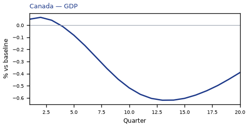
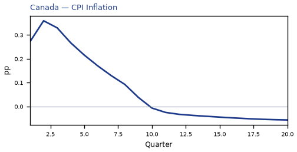
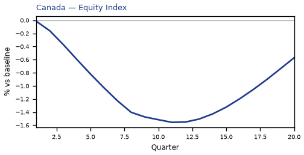
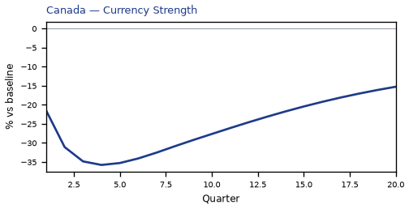
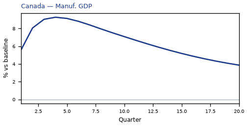
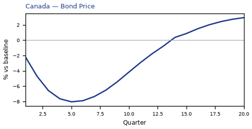
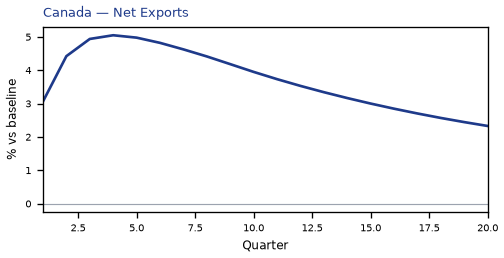
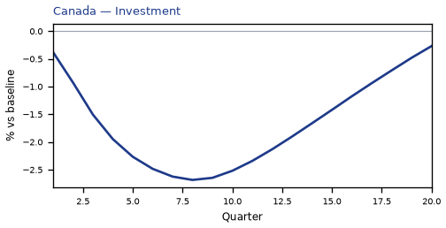
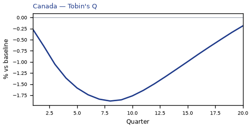

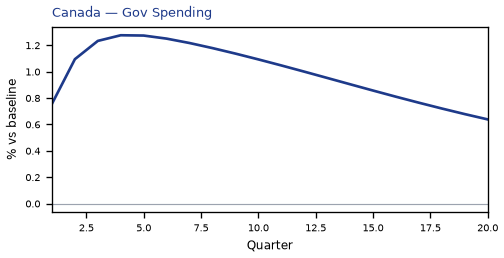
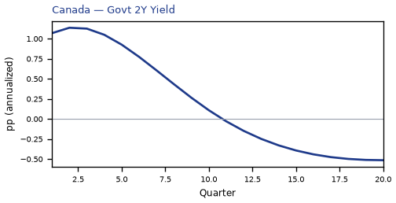
source=live · global_macro_v5 · contract v6 · Q1–Q20 JSON · not financial advice